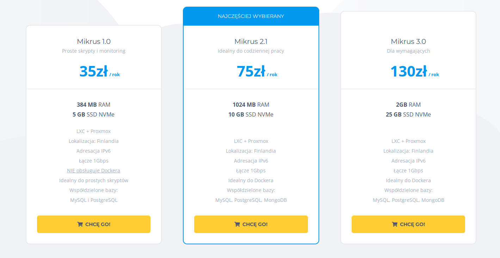
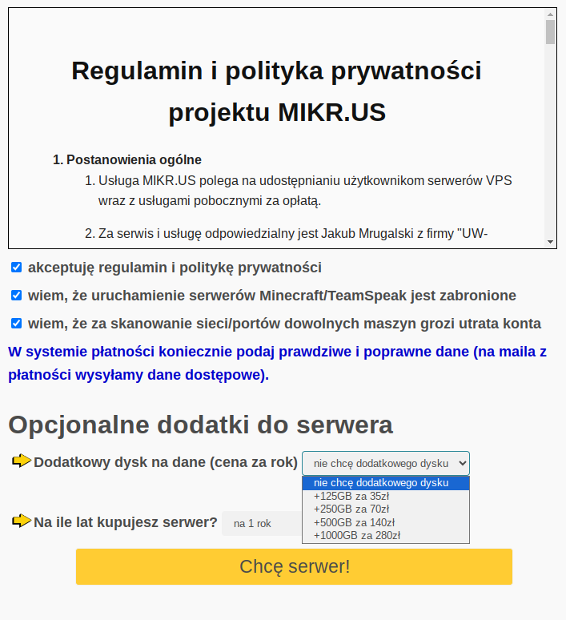
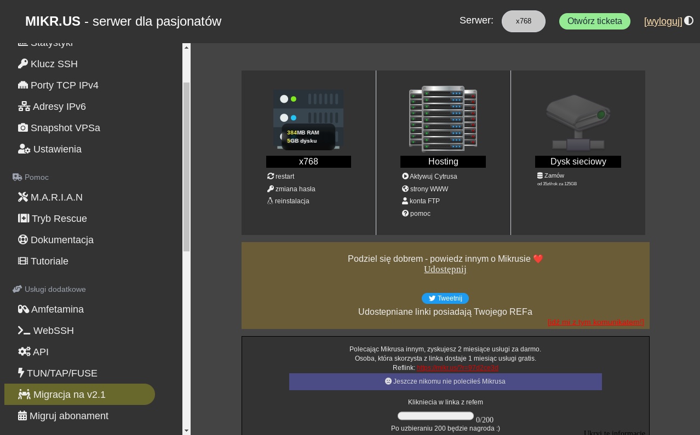
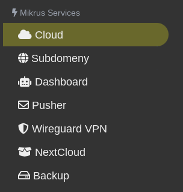
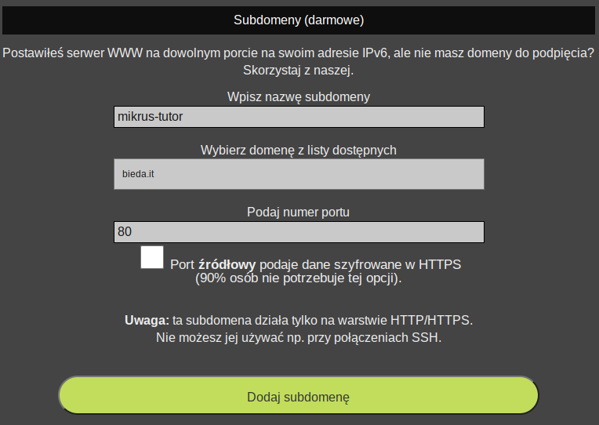
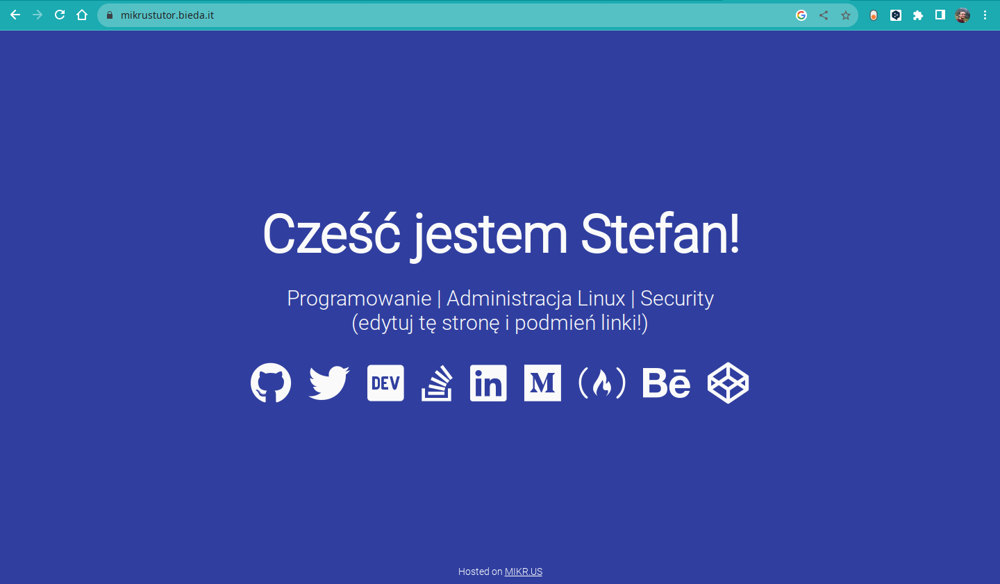

Co to jest VPS?
VPS - Virtual Private Server - to twój kawałek serwerowego tortu :) W przeciwieństwie do serwera dedykowanego, czyli maszyny którą masz całą dla siebie, kupując VPSa dostajesz serwer wirtualny. Z niewielkimi wyjątkami* w pełni funkcjonalny serwer hostowany u Twojego hostingodawcy.
Mikrus
Ten wpis może i jest kryptoreklamą Mikrusa, ale bardzo polecam tę usługę. Po pierwsze: kosztuje tyle co kilka kebabów rocznie Po drugie: jego support jest state-of-art, zarówno adminów jak i społeczności
Proces kupowania VPSa w Mikrusie
Wchodzisz tutaj i wybierasz najtańszą opcję. Mikrus 1.0 z niecałymi 400MB RAMu, jednym rdzeniem, 5GB dysku, bez wirtualizacji. Bez obaw, będziesz mógł zrobić upgrade do wyższej opcji.

Potem czytasz dokładnie regulamin. Płacisz w dogodny dla siebie sposób i czekasz na maila z danymi do logowania :)

Panela admina w Mikrusie

Okej. Otrzymałeś dane do logowania i Twoim oczom ukazuje się panel admina. Polecam zapoznać się z jego możliwościami.
- M.A.R.I.A.N. - odpalasz go, kiedy masz wielkie problemy z serwerem - na przykład nie odpowiada, kiedy próbujesz się z nim połączyć przez ssh.
- Amfetamina - to zastrzyk dodatkowych zasobów dla Twojego serwera na 30 minut za free, kiedy musisz np. go zaktualizować (przy 400MB RAMu może być z tym różnie :P)
- Tajemniczy przycisk na górze “Otwórz ticketa” to nic innego, jak kontakt do administratorów Mikrusa. Kontaktujesz się z nimi tylko po puszczeniu M.A.R.I.A.N. -a na twoim serwerze.
Logowanie na serwer po ssh
Pora logować się na Twój serwer po ssh. Nie wiem, z jakiego systemu operacyjnego korzystasz w domu, ale nie ma to znaczenia :)
Zgodnie z instrukcją w mailu (i panelu admina) wpisz w swoim teminalu / PowerShellu
$ ssh root@maluch.mikr.us -p *port*
The authenticity of host '[maluch.mikr.us]:*port* (*IP:port*)' can't be established.
ED25519 key fingerprint is SHA256:*odcisk palca*.
This key is not known by any other names
Are you sure you want to continue connecting (yes/no/[fingerprint])? yes
Na pytanie odpowiadasz yes i podajesz hasło podane w mailu.
Twoim oczom ukazuje się piękny ekran powitalny:
Welcome to Ubuntu 20.04.6 LTS (GNU/Linux 5.4.140-1-pve x86_64)
* Documentation: https://help.ubuntu.com
* Management: https://landscape.canonical.com
* Support: https://ubuntu.com/advantage
_ _
_ __ ___ (_) | ___ __ _ _ ___
| '_ ` _ \| | |/ / '__| | | / __|
| | | | | | | <| | | |_| \__ \
|_| |_| |_|_|_|\_\_| \__,_|___/
Kilka Porad
1) Pomoc techniczna swiadczona jest na grupie https://www.facebook.com/groups/mikrusy/
2) Nie posiadasz publicznego adresu IPv4, ale masz swoj wlasny adres IPv6 (sprawdzisz go poleceniem: ip -c a)
3) Chcesz podpiac wlasna domene? zaloz konto na https://cloudflare.com i podepnij domene do adresu IPv6 (rekord AAAA)
4) Udostepnilismy Ci dwa porty na IPv4 (TCP/UDP) - podstaw tam swój lokalny adres IP i serwer
maluch.mikr.us:20768 = 192.168.7.168:20768
maluch.mikr.us:30768 = 192.168.7.168:30768
5) Jesli to mozliwe, to wszelkie ciezkie crony (np. aktualizacje systemu) uruchamiaj w nocy (po 23:00)
6) Za robienie backupow odpowiadasz TY. Za bezpieczenstwo swojego VPSa takze TY.
7) Skrypty do szybkiego stawiania usług masz w katalogu: /root/noobs/scripts/
--
- Stawianie serwerow glosowych (np. TeamSpeak czy botow muzycznych) jest zabronione.
- Skanowanie sieci jest zabronione.
- Atakowanie kogokolwiek i zabawy w 'hacking' koncza sie natychmiastowa utrata VPSa
--
root@x768:~#
Pierwsze, co musisz zrobić to zmiana hasła komendą # passwd.
Zasady panujące w Linuksie :)
Chyba pierwsze, co musisz wiedzieć: Ctrl+C kończy aktualnie wykonywany proces! Jeśli chcesz coś skopiować, użyj Ctrl+Shift+C, do wklejania użyj Ctrl+Shift+V (Linux/Mac) lub Prawego przycisku myszy (Windows PowerShell).
Po drugie: poruszanie się po shellu wymaga przyzwyczajenia i chwili nauki. Z czasem przyjdzie wprawa :) Najważniejsze to wiedzieć, gdzie szukać pomocy. Anglojęzyczny internet jest pełny informacji, praktycznie zawsze wystarczy wkleić błąd w google, aby otrzymać odpowiedź. Składnia poleceń w terminalu wygląda mniej więcej tak:
komenda --parametr -p argument
A kilka najważniejszych komend na początek to:
- pwd - pokazuje, w jakim folderze się znajdujesz
- cd ścieżka/do/folderu - wchodzi do folderu
- ls - drukuje zawartość bieżącego folderu
- touch nazwa_pliku - tworzy plik
- nano nazwa_pliku - otwiera plik w prostym edytorze tekstu
- man komenda - wyświetla pomoc dotyczącą komendy
- komenda –help - wyświetla krótką pomoc dotyczącą komendy
- apt update - aktualizuje repozytoria
- apt upgrade - aktualizuje oprogramowanie serwera
- apt search nazwa_pakietu - szuka pakietu w repozytorium
- apt install nazwa_pakietu - instaluje pakiet razem z zależnościami na serwerze
Na początek może tyle wystarczyć :)
Zainstalujmy serwer WWW i odpalmy naszą pierwszą stronę Hello World
Zainstalujmy serwer nginx
apt install nginx-extras
Odpowiedz “T” na pytanie czy kontynuować. Po chwili nginx będzie zainstalowany. Teraz dwie komendy dzielą nas od postawienia serwera WWW. Uruchomią one demona nginx, który będzie nasłuchiwał zapytań i odpowiadał stronami.
systemctl enable nginx
systemctl start nginx
Sprawdźmy, czy Twój nginx nasłuchuje.
netstat -plnt
Ta komenda zwróci procesy, które aktualnie nasłuchują na portach IP.
Active Internet connections (only servers)
Proto Recv-Q Send-Q Local Address Foreign Address State PID/Program name
tcp 0 0 0.0.0.0:80 0.0.0.0:* LISTEN 1083/nginx: master
tcp 0 0 127.0.0.53:53 0.0.0.0:* LISTEN 91/systemd-resolved
tcp6 0 0 :::80 :::* LISTEN 1083/nginx: master
tcp6 0 0 :::22 :::* LISTEN 1/init
Zastanawiasz się pewnie, co oznaczają :::80 i :::20, są to porty IPv6, nadal niezbyt popularne w Polsce ;)
Aby obejrzeć stronę, która jest domyślnie hostowana przez nginx’a, musimy mieć podpiętą domenę. Udajmy się więc do panelu admina Mikrusa. Wybierz “Subdomeny”.

I wybierz sobie ładną domenę xd

Po kilku minutach będziesz mógł przejść na swoją nową stronę i zobaczysz mniej więcej to:

Jako ciekawostkę podpowiem Ci, że hostowana strona znajduje się w /var/www/html (dla ambitnych :D).
Na dzisiaj to wszystko :)
Tradycyjnie, jeśli czegoś nie kumasz albo maszy pytania, uderzaj: kacper@menzomin.org
Przypisy
* - na przykładzie Mikrusa, w najniższym pakiecie nie uruchomisz Dockera. Nie zaktualizujesz również jądra. VPSy posiadają swoje pewne ograniczenia, które nie wejdą nam w drogę w większości zastosowań.